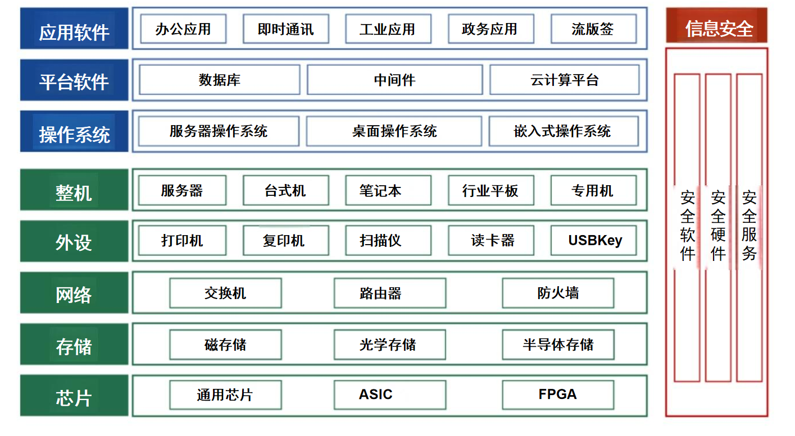

信创简单总结
信创的基本概念
信创的来源：24家专业从事软硬件关键技术研究及应用的国内单位，共同发起成立了一个非营利性社会组 织，并将其命名为“信息技术应用创新工作委员会”,简称“信创工委会”。这是“信创”这个词的来源。 "信创"的核心目的，是为了实现信息技术产业的完全自主可控。
信创的发展历程: (“863”、“973”、“核高基”) 核高基就是“核心电子器件、高端通用芯片及基础软件产品”的简称
信创的发展背景(关键时间警示) -
2008年：微软“黑屏”事件；
- 2013年：美国“棱镜门”事件； - 2018年：中兴、华为事件； -
实体清单事件
信创的发展背景 - 由于历史的原因，我们国家在信息技术领域长期处于模仿和引进的地位。国际IT巨头占据了大量的市场份额， 也垄断了国内的信息基础设施。它们制定了国内IT底层技术标准，并控制了整个信息产业生态。 - 随着中国国力的不断崛起，某些国家主动挑起贸易和科技领域的摩擦，试图打压中国的和平发展。作为国民经济底层支持的信息技术领域，自然而然地成为他们的重点打击对象。 - 面对日益增加的安全风险，我们国家必须尽快实现自主可控。
信创的5个核心要求 技术先进，数据安全，技术成熟，产业完整，自主可控
信创的作用和意义 -
带动经济：信息技术应用创新发展是目前的一项国家战略，也是当今形势下国家经济发展的新动能。
-
维护安全：发展信创是为了解决本质安全的问题，实现可掌控、可研究、可发展、可生产。
-
布局产业：信创产业发展已经成为发展数字经济的关键举措，可以带动传统ICT
产业转型，构建产业集群。
信创的产业生态
信创产业的体系类别
- 信创产业的生态体系极为庞大，几乎覆盖信息产业的方方面面；
- 从产业链角度来看，它主要由基础硬件、基础软件、应用软件、信息安全这四部分构成。 
信创的应用领域(2+8+N)
中国信创产业发展现状
中国信创产业趋向集团化，目前形成“三大四小”的发展格局。 “三大”:中国电子、中国电科和华为。 “四小”:航天系、中科系、浪潮股份和紫光集团。
信创的芯片产业链
信创的芯片产业链包括 - 计算机系统芯片 - 中央处理器（CPU，Central Processing Unit） - 图形处理单元（GPU，Graphics Processing Unit） - 数据处理单元（DPU，Data Processing Unit）
- 移动终端芯片
- 主芯片/片上系统（SoC，System on Chip）
- 应用处理器（AP，Application Processor）
- 基带芯片（BP，Baseband Processor）
- 嵌入式CPU/GPU（Embedded CPU/GPU）
- 嵌入式图形处理芯片（EmbeddedDSP）
- 通用电子系统芯片
- 可编程逻辑设备（FPGA/EPLD，Field Programmable Gate Array）
- 数字信号处理器（DSP，Digital Signal Processor）
- 嵌入式系统（Embedded CPU）
- 半导体存储芯片
- 动态随机存取存储器（DRAM，Dynamic RAM）
- NAND闪存（NAND Flash）
- NOR闪存（NOR Flash）
- 人工智能芯片
- 嵌入式神经网络处理器（NPU，Neural network Processing Unit）
CPU分类 按照指令集分类分成 CISC(x86) RISC(ARM MIPS RISC-V)
信创储存产业链 以存储晶圆颗粒为基础载体实现数据存储，通过主控芯片完成读写控制，经封装测试环节实现芯片集成与可靠性验证，最终由模组厂商整合为终端产品
数据库
数据库的体系架构：
- 数据库内核：对数据进行写入、读取与查询等核心操作；
- 数据库管理平台：对数据库集群进行统一管理和维护；
- 数据库周边工具：提升数据库的使用效率，改善用户体验。
数据库的分类：
- 按功能：OLTP事务型数据库、OLAP分析型数据库、HTAP混合型数据库
- 按数据：传统关系型数据库、NoSQL数据库、NewSQL数据库、多模数据库
- 按架构：层次式数据库、网络式数据库、关系式数据库
- 按存储介质：硬盘数据库、内存数据库
- 按部署模式：本地数据库、云数据库
- 按商业模式：开源数据库、商业数据库
数据库的分类
关系型数据库 非关系型数据库
应用软件产业
通用应用软件
1. 办公软件 - 基础办公软件：包括输入法、浏览器、邮箱、会议系统、办公自动化（OA）、即时通讯（IM）、文字识别软件（OCR）、知识库（KB）等。 - 流版签软件：涵盖流式软件、版式软件和签名软件。
2. 管理&应用软件 - 业务管理软件：如ERP（企业资源计划）、HCM（人力资源管理）、CRM（客户关系管理）、SCM（供应链管理）、BMP（业务流程管理）等。 - 业务应用软件：例如BI平台（商业智能平台）、客服软件等。
工业软件
1. 研发设计类 - 包括CAD（计算机辅助设计）、CAM（计算机辅助制造）、PLM（产品生命周期管理）、CAE（计算机辅助工程）、EDA（电子设计自动化）等。
2. 生产制作类 - 涉及MES（制造执行系统）、DSC（分布式控制系统）、SCADA（数据采集与监视控制系统）、PLC（可编程逻辑控制器）、EMS（能源管理系统）等。
3. 运维服务类 - 主要包含APM（应用程序性能管理）、MRO（维护、修理和大修）等。
信创中的信息安全
一、硬件
- 防火墙：用于在网络边界处过滤和控制数据包，防止未经授权的访问。
- VPN（虚拟专用网络）：提供安全的远程访问通道，确保数据传输的安全性。
- 入侵检测与防御系统（IPS/IDS）：监测网络流量，识别并阻止潜在的攻击行为。
- 安全内容管理：对网络内容进行过滤和管理，防止恶意软件和不适当内容的传播。
- 统一威胁管理（UTM）：集成多种安全功能，如防火墙、防病毒、入侵检测等，提供全面的安全保护。
- 安全芯片：内置安全功能的芯片，用于加密和身份验证等安全操作。
- 智能卡：存储用户身份信息和密钥的卡片，用于身份认证和数据保护。
- 生物鉴定：利用指纹、面部识别等生物特征进行身份验证。
二、软件
- 身份管理与访问控制：管理和控制用户的身份和访问权限，确保只有授权用户可以访问资源。
- 终端安全软件：保护终端设备免受病毒、恶意软件等威胁。
- 数字信任软件：建立和维护数字环境中的信任关系，如数字签名和证书管理。
- 安全浏览器：具有增强安全功能的浏览器，保护用户在互联网上的活动。
- 态势感知：实时监控和分析网络安全状况，及时发现和应对安全威胁。
- 网络舆情：监测和分析网络上的公众舆论，防范网络舆情风险。
- 云安全：保护云计算环境中的数据和应用安全。
- 数据源认证：验证数据来源的真实性，防止数据篡改和伪造。
三、服务
- 安全规划与咨询：提供安全策略和方案的规划与咨询服务。
- 安全运维：负责日常的安全管理和维护工作，确保系统的安全运行。
- 数据灾备：制定和实施数据备份和恢复计划，保障数据的安全性和可用性。
- 安全测评认证：对信息系统进行安全评估和认证，确保其符合安全标准。
- 安全实施：执行安全策略和措施，确保其有效落地。
- 安全培训：对员工进行安全意识和技能培训，提高整体安全水平。
- 攻防演练：通过模拟攻击和防御演练，检验和提升安全防护能力。
信创的现状与未来
信创的阶段性目标是国资委下发的79号文
信创的发展阶段
预研摸索阶段（1993-2007年） 加速追赶阶段（2008-2016年） 落地实践阶段（2017-2019年） 应用赶超阶段（2020年-未来）
信创的发展思路
第一步，在党政等封闭市场进行应用，打磨产品和生态，培育骨干企业； 第二步，在产品好用和生态相对成熟之后，进入重点行业市场，如电信、轨交、电力等行业； 第三步，将信创产品全面应用到消费市场。
信创的发展现状
- 信创产业规模以每年不低于3%的比例持续增长；
- 国有企业在资金、技术等方面具备一定优势，约占据信创市场的75%;
- 东部地区借助沿海贸易和交通优势，占据市场份额50%以上，中部地区产业实力较强，占据市场份额35%,西部 地区经济体量相对较小，占据市场份额不到15%;
- 整机生产、操作系统、数据库、软件中间件等已实现全过程国产化；
- 芯片制造、存储器、安全终端、网络设备等基础设备在工艺、设计等方面与国外还存在差距。
信创的主要挑战
- 行业内的同质化竞争情况严重，价格战比较严重；
- 部分领域产品的技术指标、稳定性有待进一步提升；
- 部分关键技术仍未完全突破，尤其是上游核心技术，仍有部分被国外企业垄断；
- 信创产业的绝对用户数量仍然难以与国外巨头抗衡，需要在国际上赢得用户和市场的认可；
- 信创产业格局较为分散，龙头企业不多，无法发挥合力优势；
- 信创产业人才数量仍然不足，人才梯队结构不合理，影响长远发展；
- 存在弄虚作假的情况，假借信创的名义，浑水摸鱼。
信创发展需要关注的重点
- 顶层设计：通过政策引导和制度建设，加强资源投入，推动产业发展。
- 区域布局：地方产业合理布局信创领域，与产业升级紧密结合。
- 生态建设：产业联盟和行业协会积极发挥作用，推动生态，共建标准。
- 产业实践：通过实践，加强产品的兼容适配，推动成熟度。
- 人才培养：重视人才储备，加强产教融合，增设理论和实践课程。
人工智能定义
- 人工智能（AI）是计算机科学的一个分支，旨在使计算机能够像人类一样思考、学习和解决问题。目标是通过算法和模型让计算机具备智能行为，从而实现自动化决策和任务执行。
人工智能发展历程
- 早期阶段
- 符号主义和规则引擎
- 中期阶段
- 统计学习和机器学习的兴起
- 当前阶段
- 深度学习的广泛应用，结合大数据和计算能力，推动AI进入强人工智能领域
人工智能重要性
- 推动科技进步与解决复杂问题
强人工智能 vs 弱人工智能
- 强人工智能：具备与人类智能相当的能力，能够理解复杂问题并自主解决。
- 弱人工智能：专注于特定任务，如语音识别、图像分类等，目前应用广泛。
人工智能的应用领域
- 自然语言处理（NLP）
- 计算机视觉（CV）
- 推荐系统
- 自动驾驶